飲食店向けモバイルオーダー
- Webアプリ
- 自主制作
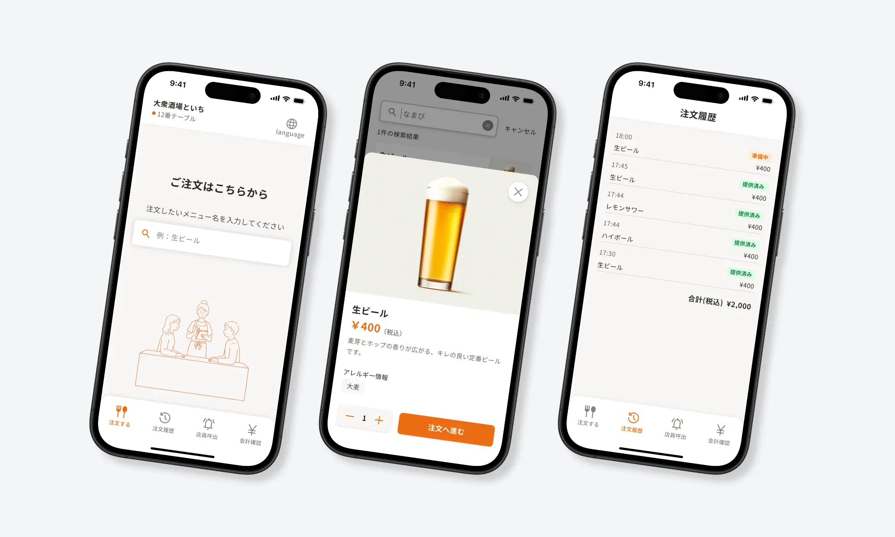
飲食店の食事体験を最適化するQRコードオーダーのデザインを自主制作しました。制作したプロダクトの概要とその設計過程を紹介したいと思います。
- カテゴリー：Webアプリケーション
- 制作種別：自主制作
- 担当領域：リサーチ、ヒアリング、要件定義、情報設計、UI設計、デザインシステム構築
- 使用ツール：Figma
- 制作期間：2ヶ月
どんなアプリか
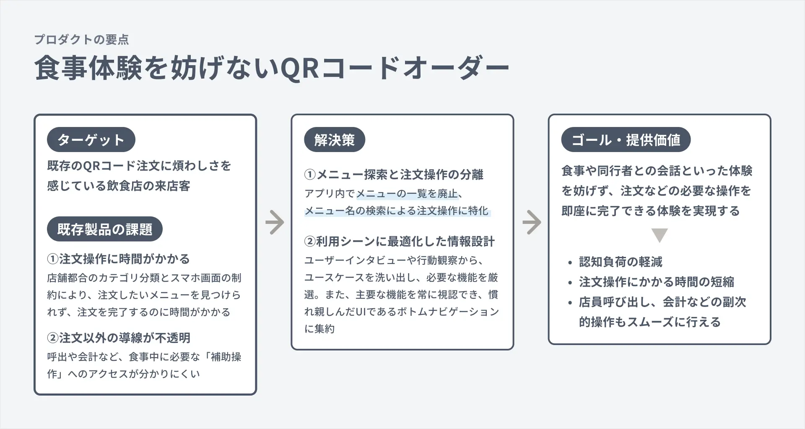
既存のモバイルオーダーの多くは、メニュー一覧から注文したい商品を見つけるのに時間がかかるという課題や、注文以外の機能への導線が不透明であるという課題を抱えています。 本プロジェクトではこれらに対し、ユーザー（来店客）の本来の目的である「食事や同行者との会話」に集中できるよう、「必要な操作を即座に終えられること」をゴールに据えて設計しました。 具体的には、大きく以下の二つのアプローチを行いました。
一つ目は、「メニュー探索と注文操作の分離」です。 アプリ内でのメニュー一覧をあえて廃止し、メニュー名検索による注文操作に特化させました。 これにより、紙のメニューで決めた商品をデジタルで即座に入力するという実際の振る舞いに最適化し、注文完了までの時間を大幅に短縮することが期待できます。
二つ目は、「利用シーンに最適化した情報設計」です。 ユースケースに基づき、真に必要な機能のみを厳選した上で、常に視認可能なボトムナビゲーションへ集約しました。 これにより、店員呼び出しや会計といった副次的な操作も迷わずスムーズに行える導線を構築しています。
このようにアプリとの接触時間を最小限に抑える設計により、デジタルリテラシーを問わず、誰もが速やかに必要な操作を完了でき、「食事や同行者との会話」という本来の目的に集中できる。 そんな体験の実現を目指して設計しました。
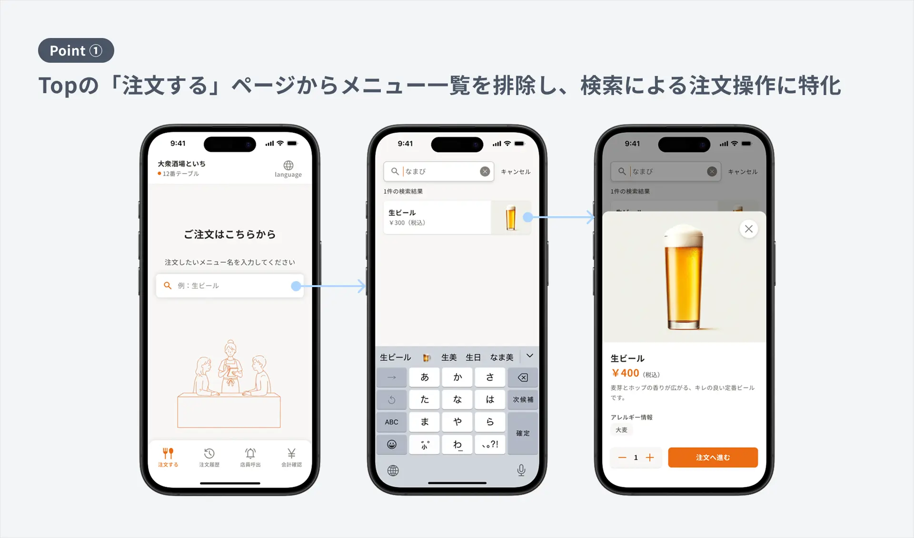
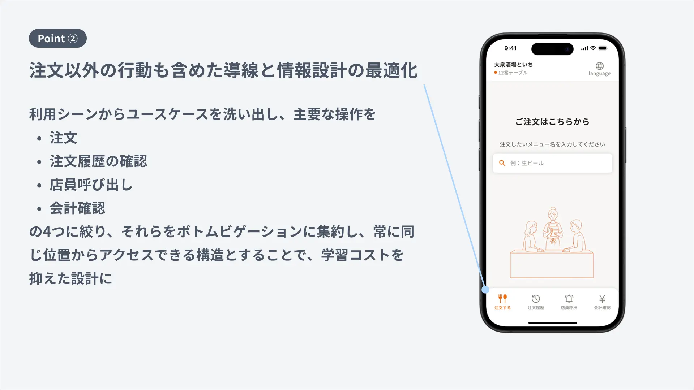
プロトタイプ/figmaファイル
SmartOrdeeのFigmaファイルはこちら
飲食店向けモバイルオーダーシステム「SmartOrdee」
結論に至ったプロセス
本プロジェクトにおいて、日常的な使いづらさの正体をどのように特定し、それを解消するためにどのような設計判断を行ったのか。 制作のスタートから最終的な解決策を導き出すまでの一連の思考過程を整理しました。
なぜこれをデザインしたか
まず、結論に至ったプロセスを説明するにあたり、私がこのプロダクトをデザインしようと考えた背景について触れておきたいと思います。
日常的に飲食店でモバイルオーダーを利用する中で、「注文したい商品が見つからない」「店員さんの呼び出しや会計への導線がわかりづらい」といった、 不便さを感じていました。こうした違和感は自分だけではなく、同行している知人が操作に迷っている姿を何度も目にしたり、 ネット上でモバイルオーダーに対する不満の声が多く上がっているのを知るうちに、「やはり多くの人が共通して感じている課題なんだ」と捉えるようになりました。
そこで、多くの飲食店で導入されているこの仕組みに対して、自分なりに設計し直すことで、既存のプロダクトでは解消しきれていない不便さを解決できるのではないか。 このような課題解決への関心が、本プロジェクトをスタートさせたきっかけです。
課題の特定とインサイト
設計にあたりまず着目したのは、ユーザー（来店客）の本来の目的です。 ユーザーリサーチの結果、来店客の目的は「食事そのもの」や「同行者との会話」にあり、オーダーシステムを使いこなすことや、アプリそのものを楽しむことではないことがわかりました。 また、プロダクトは店側から指定されたから使わざるを得ないものであり、必要な時に短時間かつ断続的に利用されるものであるという性質が浮き彫りになりました。
この前提に立つと、既存プロダクトには大きく2つの構造的な課題が見えてきました。一つ目は「注文操作に時間がかかること」です。 スマートフォンの画面制約上、どれほどUIを工夫してもメニューの一覧性には限界があります。 また、メニューのカテゴリー構造の設計が導入店舗側に委ねられているため、導入店舗の数やメニューの更新頻度を考えると、ユーザーにとって最適なメニューカテゴリーの構造を維持し続けることには限界がありました。 加えて、行動観察においても、多くのユーザーは「まず紙のメニューで注文したい商品を決め、その後にアプリを起動する」という振る舞いをしており、アプリ上でのメニュー探索が実際の行動と乖離している実態が明らかになりました。
二つ目は「注文以外の操作への導線が曖昧であること」です。 これは単なる情報設計の不徹底によるものではなく、要件定義や戦略の段階において、ビジネス都合を優先した多機能化や実装のしやすさが優先され、エンドユーザーを中心に据えた設計思想が十分に反映されていないと推察されます。 こうした背景から、作り手側の都合による不要な機能が目立つ一方で、肝心の重要な機能が埋没してしまい、来店客が操作に迷う状況を招いています。
解決策とその根拠
メニュー一覧の廃止とメニュー名検索への特化
「注文操作に時間がかかる」という課題に対し、本プロダクトではメニュー一覧を介した探索プロセスをあえて廃止し、メニュー名による検索注文に特化させる解決策を採用しました。 この設計のヒントとなったのは、サイゼリヤの注文システムです。 同システムはUIの古さや番号入力という点では賛否がありますが、メニュー探索の役割を紙のメニュー表に一任することで、アプリ上で「商品が見つからない」という課題自体を発生させない構造を持っています。 そこで本プロダクトでは、サイゼリヤのシステムの利点を踏襲しつつ、デメリットである入力の煩雑さを「メニュー名の検索」に置き換える形でブラッシュアップしました。 従来の、写真と商品名が並ぶ一覧をスクロールして目的の品を探すUIに対し、メニュー名を直接入力し検索することで、店舗側の設定状況に左右されない一貫した操作性を実現できます。 これにより、商品発見からオーダーまでの所要時間が大幅に短縮されることが期待できます。
機能の厳選とボトムナビゲーションへの集約
「導線の曖昧さ」を解消するため、エンドユーザーのゴールに不要な機能を徹底的に排除し、真に必要な機能のみを常に視認可能なボトムナビゲーションへ集約しました。 学習コストの低い一貫した骨格を設計することで、デジタルリテラシーを問わず、初見のユーザーでも迷わず操作を完了できる導線を構築しています。
これらは、モバイルオーダーはあくまで食事体験を支える「黒子」であり、必要な時に短時間で断続的に利用されるものである、というゴールダイレクテッドデザインのプロセスから導き出したインサイトに基づいています。 作り手や店舗側の都合ではなく、ユーザーの「食事を楽しみ、必要な操作を即座に終える」という本来の目的に最適化することで、構造的な使いづらさの解消を目指しました。
詳細なデザインプロセス
デザインプロセスはゴールダイレクテッドデザインのプロセスを軸に、以下の手順で進めました。 以降のセクションでは、本プロダクトの詳細なデザインプロセスを紹介したいと思います。
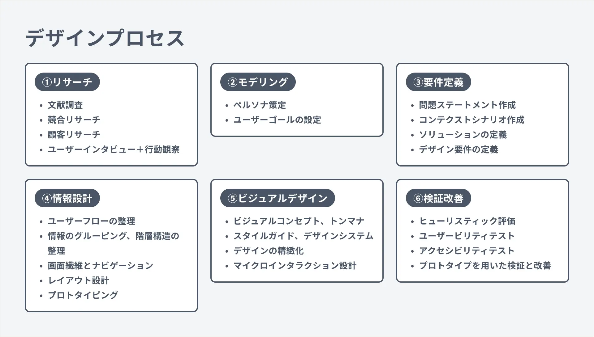
1. リサーチ
リサーチに先立って、本プロダクトで扱うスコープを設定しました。導入店舗側の管理画面やキッチンモニター、会計連動などを含めるとスコープが広がりすぎて個人制作で扱える範囲を超えるので、エンドユーザー、つまり飲食店の来店客向けに提供するサービスに絞ってプロダクトを考えることとしました。
また、この時点ではQRコードオーダーというソリューションに縛られず、フラットな状態で顧客（導入店舗）とユーザー（来店客）にとって本当に最適なソリューションは何か？というところを出発点にしました。
1-1. 文献調査
まず、QRコードオーダーをはじめ、タブレット注文を含めた飲食店のオーダーシステムや、飲食店そのものに関する文献をデスクリサーチし、飲食店や来店客に関する課題やニーズ、業界固有の問題などの概略を知ることから始めました。
1-2. 競合リサーチ
文献調査によって業界内でもシェアや評価の高い競合サービスを特定しました。そして、それらのサービスに関してデスクリサーチを行うとともに、実際にサービスを利用して、競合のメリット・デメリットを整理しました。
競合サービスとしてピックアップしたものが以下：
・Airレジオーダー
・食べログオーダー
・ダイニー
・サイゼリヤの注文システム
1-3. 顧客リサーチ
次に、顧客リサーチということで、オーダーシステムを導入する飲食店舗側に関するリサーチを行いました。 リサーチの結果、飲食店が新しいオーダーシステムに求めている最上位のゴールは、「利益の最大化」と「現場負担の最小化」を同時に実現することにあるとわかりました。 しかし、既存のモバイルオーダーやPOSシステムは、業務効率化という利点を持ちながらも、導入コストや決済手数料による利益圧迫、端末管理やトラブル対応といった運用負担といった課題を抱えています。 特に、タブレットなどの店舗専用端末を保有するモデルは、固定費の増大と日常的なメンテナンス負荷を生むことがボトルネックになっています。
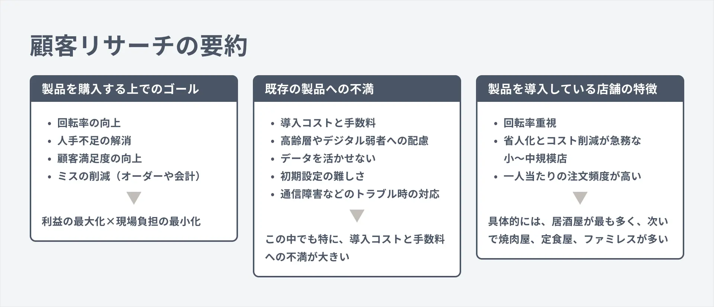
1-4. ユーザーインタビューと行動観察
次に、来店客の実際の利用状況を把握するため、実店舗での行動観察とインタビューを実施しました。
調査対象は、月に1回以上飲食店を利用する20代〜50代の計12名です。内訳として、QRコードオーダー、対面注文、タブレットオーダーの各形式を利用するユーザーを対象とし、実際の利用状況下での観察を行いました。
分析にあたっては、操作中の迷いや躊躇、確認行為といった具体的な行動をトリガーに深掘りした質問を重ね、ユーザーの潜在的な不便さや行動の背景を明らかにしました。
主要なインサイト
インタビューと行動観察の結果、ユーザーの行動の裏側にある本質的な課題として、主に以下の点が浮き彫りになりました。
第一に、オーダーシステムは主役ではないということです。 インタビューと観察の結果、飲食店の来店客の一番の目的は「食事」や「同行者との会話」を楽しむことにあることがわかりました。 オーダーシステムはその体験を補助する存在であり、用があるときに短時間だけ利用され、アプリ自体を楽しむ性質のものではありません。
第二に、ユーザーが求めているのは「利便性の享受」であり「システムの操作」ではないということです。 インタビューと観察の結果、ユーザーがオーダーシステムに価値を感じるのは、「大声で店員を呼ぶ必要がない」「自分のタイミングで追加注文ができる」「混雑時でも待たされない」といった、具体的な利用メリットを享受できる時のみであることが分かりました。 一方で、店側の管理都合を優先した「専用アプリのダウンロード」や「LINEの友だち登録」の強制、さらには操作の分かりづらい不親切なUIに対しては、強い不満や心理的な反発が見られました。 つまり、ユーザーはオーダーシステムそのものを求めているのではなく、あくまで「注文がストレスなく即座に完了すること」を評価の軸に置いています。 店側の都合で課される不便なプロセスは、本来の目的である食事体験を損なうノイズとして捉えられていました。
第三に、既存プロダクトの最大の課題は設計の不備が生む「迷い」であるということです。 インタビューと観察の結果、多くのユーザーが目的の商品に辿り着けず、操作のたびに思考を中断させられている実態が分かりました。 これは検索機能の欠如に加え、店舗ごとに異なる不規則なカテゴリー分けや階層構造が、発見を困難にしているためです。 また、注文確定時のフィードバックが曖昧なため、「本当に注文できたか」という不安から履歴を探し回る行動も目立ちました。 しかし、その履歴自体が見つけにくかったり、時系列が不明確で現在の状況が把握しづらいといった不備も重なっています。 こうした注文完了や会計への導線の不透明さが、本来意識する必要のない「操作そのもの」へのストレスを生み、食事体験を繰り返し阻害する要因となっていました。
導き出したユーザーゴール
エスノグラフィックリサーチの結果、本プロダクトの最上位ゴールを「食事や同行者との会話を妨げないこと」と定義しました。 ユーザーにとってアプリは主役ではなく、あくまで食事を円滑にするための補助的な存在であるからです。 この最上位ゴールを達成するため、以下の3つのサブゴールを設定しました。
1. 必要な操作を即座かつ確実に完了できる（エンドゴール）
注文から会計まで、食事中に発生するあらゆる操作を迷わず短時間で終えられる状態を目指します。操作そのものを意識させない設計により、プロダクトに注意を奪われるストレスを排除します。
2. プロダクトを利用する明確なメリットを感じられる（エクスペリエンスゴール）
待ち時間の削減や、自分のペースで情報を得られるといった利便性を直接享受できる状態を目指します。 店側の効率化のために「使わされている」という不満を、ユーザー自身がメリットのために「自発的に選択している」という納得感へと転換させます。 特に、個人のデバイスを使用するモバイルオーダーにおいては、この「自分にとっての利得」が明確に伝わることが、心理的ハードルを払拭し、体験をポジティブに捉え直すための鍵になると判断しました。
3. アプリを使いこなせていると感じられる（エクスペリエンスゴール）
これは「操作が分からなくても分からないと言いづらい」というユーザーの声を反映したものです。 人は基本的に、自分を無能だと思いたくありません。特に飲食店という場では、操作に迷うこと自体が小さなストレスになります。 そのため、こうしたユーザーの心理を踏まえ、このゴールを設定しました。
多機能化や装飾に頼るのではなく、システムによる介入を最小化し、ユーザーが速やかに本来の目的である「食事」へと意識を戻せる設計をゴールに据えています。
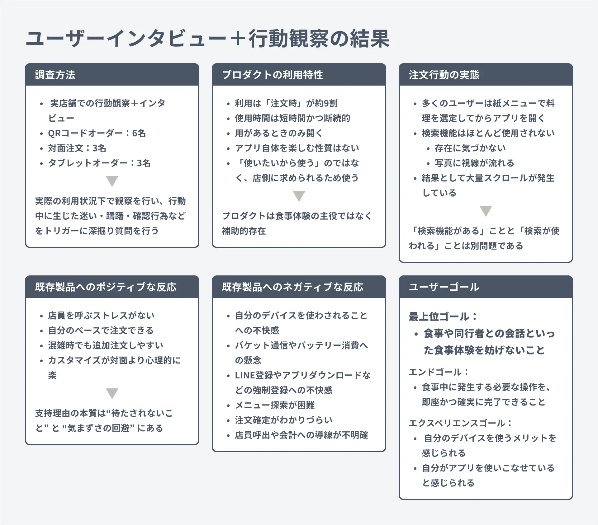
2. ペルソナモデリング
ユーザーインタビューと行動観察で得られた行動・発言・感情のデータを整理し、共通して見られた振る舞いと課題を抽出しました。 その結果をもとに、本プロジェクトの設計判断の基準となるプライマリーペルソナを構築しています。
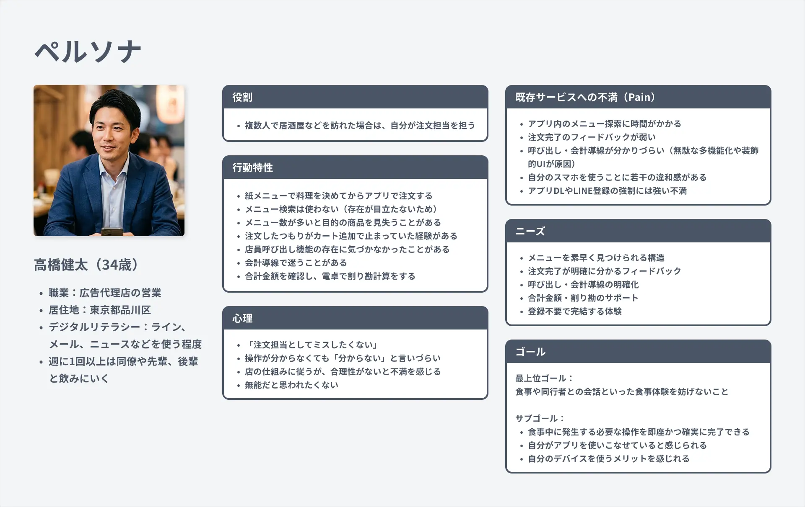
3. 要件定義
本フェーズでは、これまでのリサーチで抽出したユーザー（来店客）とクライアント（導入店舗）双方の課題やニーズ、ゴールを整理し、それらを具体的な解決策へと昇華させるための定義を行いました。 まず、現状の文脈における理想的な体験を模索するため「コンテクストシナリオ」を作成し、課題解決に最も適したソリューションを検討。導き出した解決策に基づき、ユーザーの具体的な行動フローを描いた「ユーザーシナリオ」へと落とし込みました。 これら一連のシナリオから、プロダクトが備えるべき「データ要素」や「機能要素」を抽出・整理し、迷いのない設計を実現するためのデザイン要件を策定しています。
3-1. ソリューションの検討
顧客リサーチ、ペルソナ、ユーザーゴール、コンテクストシナリオを踏まえ、制約条件と本質的課題の両方を満たすソリューションを模索しました。
検討の結果、ソリューションの方向性は大きく以下の３つに定まりました。
- QRコードオーダーの採用
- 機能の最小化と学習コストの削減
- メニュー探索と注文操作の完全分離
1. QRコードオーダーの採用について
導入店舗側のニーズを整理した結果、共通して「端末の導入・管理コストの最小化」「固定費の抑制」、そして「複数回注文が発生する業態への適応」という3点が重要視されていることが明らかになりました。
これらのニーズに対し、専用タブレットの導入は、操作性や一覧性の面で一定の利点があるものの、端末代金やメンテナンス費用といった初期投資と維持コストが極めて高く、導入できるのは資金力のある一部の店舗に限られてしまうという課題があります。
そこで、コスト障壁を最小限に抑えつつ、あらゆる規模の店舗がデジタル化の恩恵を受けられる最も合理的な解決策として、来店客自身のデバイスを活用する「QRコードオーダー方式」を採用しました。 この方式であれば、店舗側の設備負担を最小化しながら、追加注文の取りこぼし防止といった業態特有のニーズにも柔軟に応えることが可能になります。
一方で、ユーザーからは「自分のデバイスを使わされること」への不満が存在することも確認しています。しかし、本プロダクトの主な導入先は、小〜中規模で回転率を重視する大衆店です。このような業態では、迅速な注文や追加オーダーの利便性が重視される傾向があり、操作の合理性が担保されていれば、一定の負担は許容されうると判断しました。
2. 機能の最小化と学習コストの削減
リサーチから、既存プロダクトではビジネス都合による機能過多が体験を阻害していることが明らかになりました。 具体的には、「付加機能の増加」、「情報優先度の曖昧化」、「断続的利用に不向きなリッチUI」、これらは学習コストを増加させ、短時間利用という文脈と矛盾します。 そこで、本プロジェクトでは、「短時間・断続的利用」に最適化するため、必要最低限の機能に限定し、情報優先度を明確化する方針を採用しました。
3. メニュー探索と注文操作の完全分離
メニュー探索の困難さは、大きく次の３つの問題に起因しています。
①スマホの小画面という物理的制約による一覧性の低さ
②導入店舗任せのカテゴリー構造
③検索導線の機能不全
まず、スマートフォン上で大量の商品を一覧性高く提示し、即座に目的商品へ到達させる設計は、既存プロダクトが例外なく失敗していることから、どれほどUIを工夫しようとも限界があると判断しました。
また、注文システムの多くは、メニュー登録やカテゴリー登録を導入店舗側が行うことになるため、ユーザー体験の根幹をなすカテゴリーの構造設計を導入店舗側に一任してしまうという構造的な問題も、アプリ内のメニュ一覧から選ぶという方式では解決できないと考えました。
ここで着目したのが、紙メニューとデジタル注文を分離する方式を採用しているサイゼリヤの注文システムです。 この方式は賛否があるものの、紙のメニューから商品を選び、紙に書かれた注文番号を端末で入力するという方法は「注文したい商品が見つからない」という課題を構造的に解消しています。 ただし、番号入力方式はユーザーのメンタルモデルに適合しづらく、誤入力やカスタマイズ性の制約といった課題があります。
そこで、本プロダクトではこのアプローチを発展させ、
・メニュー探索は紙メニューに委ねる
・アプリではメニュー一覧表示を廃止
・検索バーからメニュー名で直接検索に注文操作の機能を限定
という設計を採用しました。これにより、番号記憶の負担を排除、誤入力の抑制、ユーザーの自然な思考プロセスとの整合を実現できるようにしました。
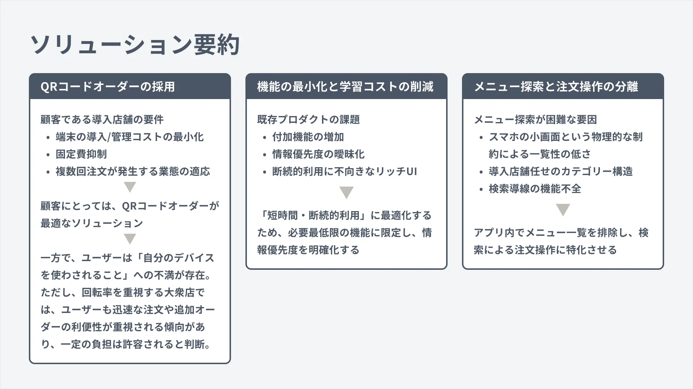
3-2. デザイン要件の定義
次に、ここまでに整理したペルソナ、ゴール、問題ステートメント、そしてソリューションの方向性を踏まえ、それらを具体的に実現するためのデザイン要件を定義しました。
まず、ユーザーが実際の利用環境の中でどのようにプロダクトを利用するのかを明確にするため、ユーザーシナリオを作成。 次に、そのユーザーシナリオをもとに想定されるユースケースを洗い出し、それぞれのユースケースを実現するために必要となる要素を、データ要素と機能要素に分解して整理しました。
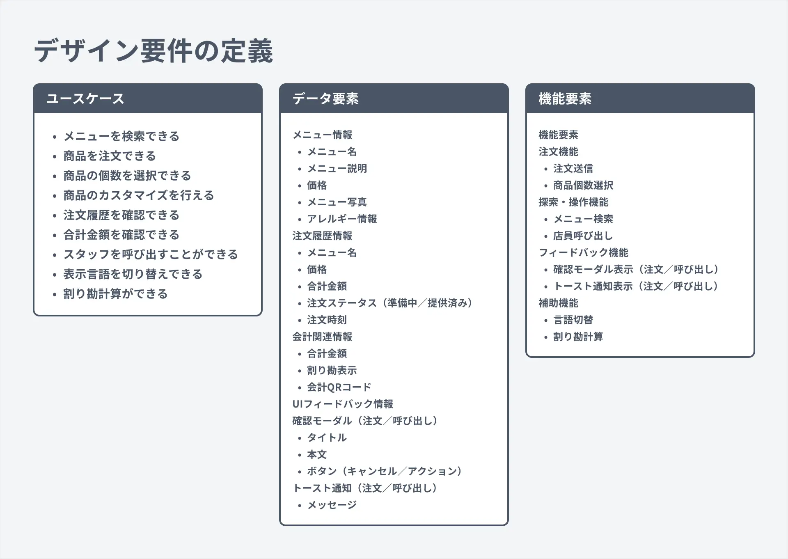
4. 情報設計（インタラクションデザイン）
本フェーズでは、要件をもとに、具体的な情報設計を行いました。いわゆるUX5段階モデルでいう構造、骨格の部分の設計。
4-1. 行動フローの整理
ユーザーシナリオをベースに、よりユーザーの行動を具体化した行動フローを整理し、具体的な体験の流れや、ユーザーが目的を達成するまでの手順を整理しました。
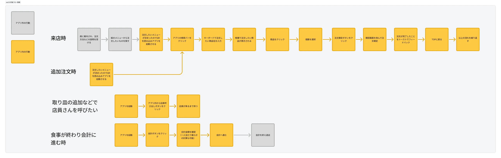
4-2. オブジェクト構造の整理
ここまでに整理したユーザーシナリオと行動フローをもとに、画面間の遷移関係、情報の階層構造、機能・データのグルーピングを整理しました。
なお、この段階で情報構造を固定するのではなく、画面設計（UI）と往復しながら構造を調整する形で設計を進めています。
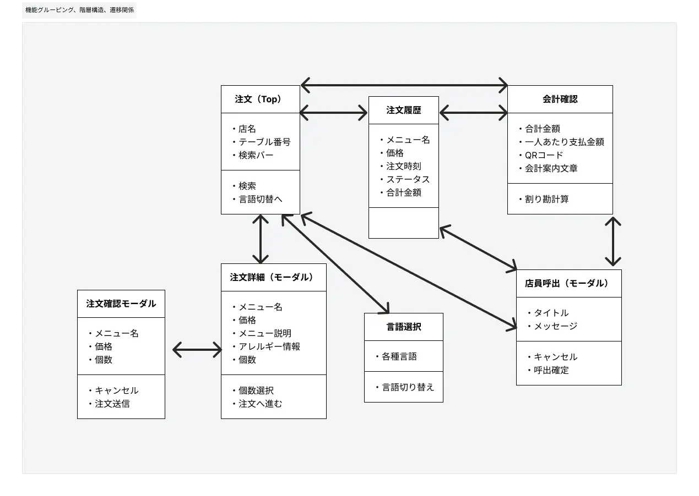
4-3. レイアウト設計
次に、先ほどのオブジェクト構造をもとに、具体的なレイアウト設計に進みました。 ここでも、これまでのペルソナやユーザーリサーチの結果を前提とし、ユーザーが目的の行動を迷わず最短で達成できることを重視して設計しました。
なお、この段階でプロトタイプを作成し、フローや操作性の検証改善を重ねました。
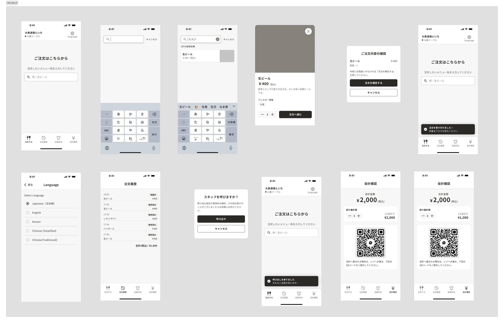
具体的な設計のポイントとしては、注文のフローとナビゲーションの設計です。
注文フロー
本プロダクトでは、商品発見にかかる時間を最小化するため、検索による注文操作に特化したUIを採用しています。 まずTOP画面では、迷いを生む余計な情報を極限まで削ぎ落とし、画面中央に検索バーを大きく配置しました。 アプリを開いた瞬間に目的を提示することで、ユーザーを迷わせることなく次のアクションへと誘導します。
検索バーをタップした後の入力フェーズでは、ひらがな2〜3文字を入力するだけで候補が随時表示される予測機能を備え、フリック入力やタップの手間といった身体的コストを徹底的に削減しました。 目的の商品を選択した後は、詳細画面で内容を確認し、最後に出る確認モーダルを通じて注文を確定します。
ここで、既存の多くのサービスに見られる「カートに追加」というプロセスはあえて廃止しました。 これは、カートに入れただけで注文したと誤認するミスを防ぎ、一回一回の操作を確実に完了させるための判断です。 個別に確定する形式をとっても、本設計では入力から確定までのスピードが極めて速いため、操作上の負担は増えません。 最終的に、注文確定後は即座にトーストによるフィードバックを表示することで、ユーザーが「正しくオーダーが通った」という確信を持ち、速やかに食事や会話へと意識を戻せる設計としています。
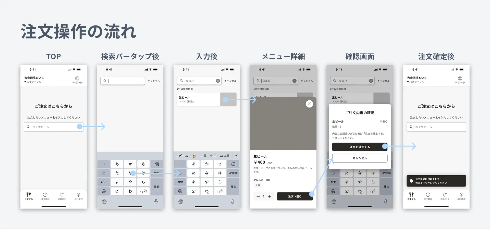
ナビゲーションの設計
本プロダクトでは、飲食時のユースケースを徹底的に絞り込み、ユーザーを迷わせないシンプルなナビゲーション構造を追求しました。 リサーチを通じて得られた「短時間かつ断続的に利用される」という特性を踏まえ、主要機能を「注文・注文履歴・店員呼出・会計確認」の4つに厳選し、どの画面からでも即座にアクセスできるボトムナビゲーションに集約しています。 あえて機能を絞り込み、常に同じ位置に固定配置することで、初めて利用する際でも機能を探し回る必要がなく、学習コストを最小限に抑えられる設計としました。
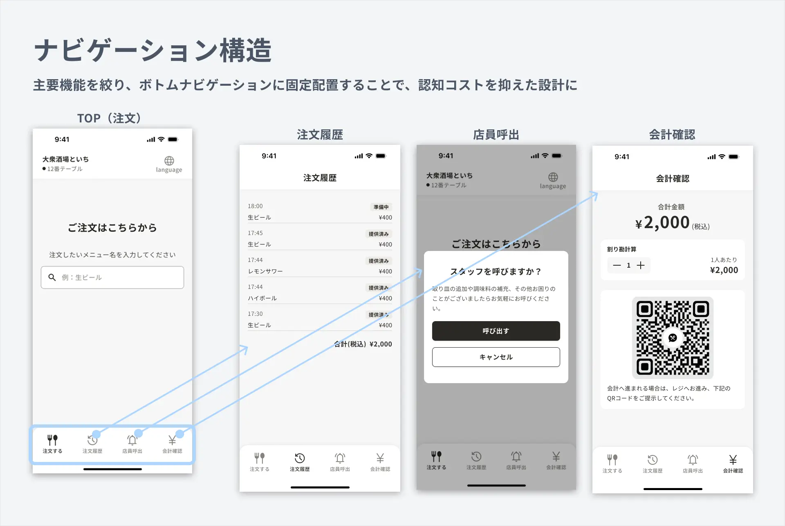
ビジュアルデザイン
次に、ここまでで整理した情報構造を基に、視認性と一貫性を重視したビジュアルデザインを構築しました。
飲食店での短時間かつ断続的な操作を想定し、タイポグラフィや余白、コントラストを厳密に調整することで情報の視覚的階層を明確化しています。 特に主要なアクションボタンは視覚的に強調し、取るべき行動が伝わりやすくなるよう配慮しました。 また、UI要素をコンポーネント化して形状やルールの統一を徹底することで、画面を跨いでも迷いのない一貫した操作体験を実現しています。 配色は、温かみと活気を感じさせるオレンジをアクセントカラーに採用しつつ、ベースにはニュートラルカラーを用いることで、多様な業種に対応できる汎用性とモダンな清潔感を両立させました。
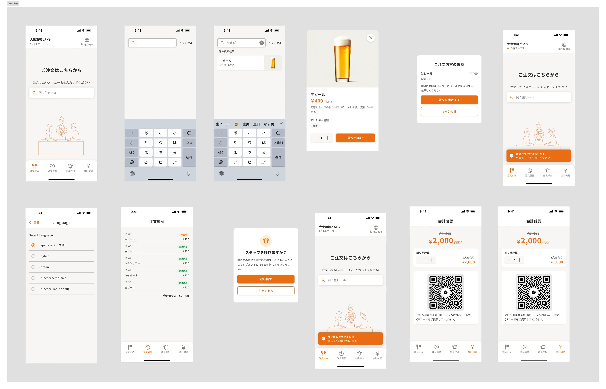
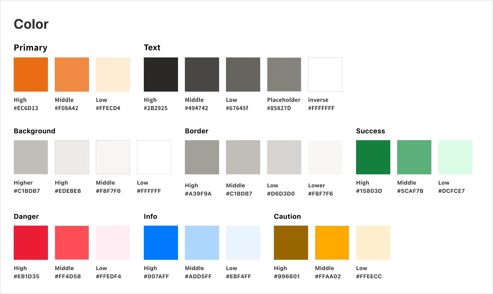
検証・改善
ビジュアルデザインを適用した高精度なプロトタイプを用い、設計の妥当性を最終確認するための検証と改善を実施しました。
まず、専門的な視点から簡易的なヒューリスティック評価とアクセシビリティテストをセルフで行い、視認性や操作の整合性における細かな不備を洗い出し、ブラッシュアップを重ねました。
また、実際のユーザーを対象としてプロトタイプを用いたテストを行い、操作性の確認とともに、本プロダクトが提供する「検索特化型」のソリューションがユーザーの課題解決につながっているか、ゴールを達成しているか等を検証しました。 検証の結果、複数人での利用シーンでは紙のメニューとアプリを併用する実態や、画像一覧形式のメニューに慣れたユーザーが検索主体の操作に一瞬戸惑うといった反応も確認されました。 しかし、「必要な操作を即座に終えられる」「膨大なメニューから目的の商品を最短で探し出せる」といったプロダクトの核心的な価値には一定の支持が得られました。
したがって、改善フェーズでは、検索特化型のソリューションという大枠の方向性は変えずに、ユーザーフィードバックに基づいたレイアウトの再構成やUIコンポーネントの微調整、タスクフローの最適化に注力しました。
終わりに
今回のプロジェクトでは、ゴールダイレクテッドデザイン（GDD）のプロセスに基づき、ユーザーリサーチからペルソナ設計、問題定義、ソリューション設計、UI設計、検証までの一連のプロダクトデザインプロセスを実践しました。 単にユーザー調査を行ってUIを作るという表面的なアプローチではなく、ユーザーの行動や心理を踏まえた問題構造の整理からソリューションの定義まで行い設計できたのは大きな収穫だったと感じています。
一方で、今回のプロジェクトにおける反省点として、ユーザーリサーチにおける客観性の担保が挙げられます。 具体的には、リサーチの協力者が知人中心の構成となり、サンプルの抽出に偏りが生じてしまった点です。 年齢や性別などの属性分散には配慮したものの、近しい関係性ゆえの無意識なバイアスを完全に排除しきれたとは言えません。 実務においてより確かなインサイトを得るためには、ターゲット属性の定義からリクルーティングの手法に至るまで、より厳密な手順で調査を設計する必要があると感じました。